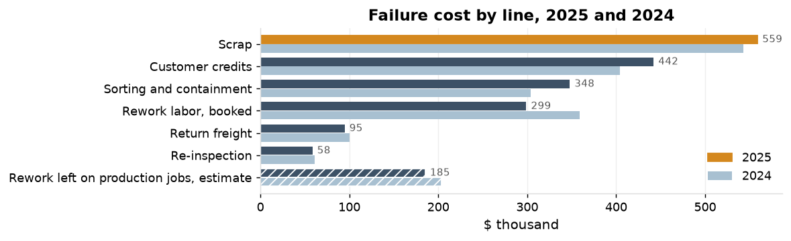

Cost of quality in 2025 is $2,795,965 as booked, 7.3% of revenue (7.8% with rework left on production jobs estimated). The monthly scrap report shows $533,788; failure cost as booked is 3.35 times that.

| 2025 | 2024 | |
|---|---|---|
| Total as booked; over revenue | $2,795,965; 7.3% | $2,451,343; 6.7% |
| Total with the estimate; over revenue | $2,981,207; 7.8% | $2,622,840; 7.1% |
| Failure over the scrap report: as booked; with the estimate | 3.35; 3.70 | 3.17; 3.54 |
| Failure : appraisal : prevention, as booked | 10.5 : 4.9 : 1 | 8.8 : 4.7 : 1 |
Failure cost reported on a booked basis with no estimate line required, reviewed monthly.
| 2025 | Booked | Traced to a source table |
|---|---|---|
| Failure | $1,790,858 | $1,790,858 |
| Appraisal | $834,208 | $71,010 |
| Prevention | $170,900 | $0 |
| Rework left on production jobs, estimate | $185,242 on 33 NCRs |
| Action | Owner | When |
|---|---|---|
| Rework and sorting hours booked against the NCR, not the production job | Production manager and controller | March 2026 |
| Cost of quality by category on the monthly quality review, booked basis, with the scrap report as a component | Quality manager | from the February 2026 review |
| A labor code for re-inspection, apart from inspection labor | Controller | March 2026 |
Rework NCRs without booked hours from 33 of 95 in 2025 to none, so that the estimate line ($185,242 in 2025) closes into booked rework. Measured to date: F-14 scrap at $766 a month since the K20 insert, from $4,196.
The count of rework NCRs without hours and the four categories as booked, each month on the quality review. The cost lines traced again to their source tables at the end of 2026.